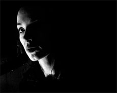

|
NE CHANGE RIEN (Change Nothing)
Pedro Costa | F / P 2009 | 98 min.
Material: HDV
Format: 35mm
Original language: French
Script: Pedro Costa
Camera: Pedro Costa
Editing: Patricia Saramago
Sound: Philippe Morel, Olivier Blanc, Vasco Pedroso, Miguel Cabral, Jean-Pierre Laforce Music: Rodolphe Burger, Pierre Alferi, Jeanne Balibar, Jacques Offenbach
With Jeanne Balibar, Rodolphe Burger, Hervé Loos, Arnaud Dieterlen, Joël Theux
Production: Sociedade Optica Tecnica Optec, Red Star Cinéma
Print/Sales: Red Star Cinéma
www.pedro-costa.net
In 2005, Costa shot a 12-minute backstage rehearsal with Balibar for a short, then expanded the material for his feature. Shot in high-contrast black-and-white on digital video, NE CHANGE RIEN is a masterwork of chiaroscuro lighting, a study in the void between the visible and invisible: faces and objects, partially illuminated by conic rays and lambent moons from a single light source (a window, a keylight), gleam in the primordial darkness.
The footage, captured entirely indoors, often in cramped spaces with low-angle fixed-camera shots, is bathed in nightfall, an immersive technique that makes spatial depth appear chasmic and the sonic textures that emerge from within it hard to resist. The film is an homage to the creative process of Balibar and her collaborators and a trancelike experiment in pure-cinema aesthetics. — Reverse Shot
Pedro Costa, born in Lisbon in 1959, the former rock guitarist entered the then nascent Lisbon Film School in 1977, existing on a steady diet of cinema classics and contemporary criticism that were soon channeled into his astounding debut film, The Blood. His later features, especially his Fontaínhas neighborhood trilogy, abandoned the hectic cineaste’s dazzle of The Blood for a nuanced, intimate, rigorous aesthetic of observation and poetic interludes, marked by Vermeer-like domestic tableaux and a compassionate attention to his dispossessed, forgotten characters.
Films: 2007 The Rabbit Hunters, Tarrafal | 2006 Juventude em marcha (UNDERDOX 02) | 2005 Ne change rien | 2001 6 Bagatelas (UNDERDOX 02), Où gît votre sourire enfoui? | 2000 No quarto da Vanda | 1997 Ossos | 1994 Casa de lava | 1990 O sangue
back
|